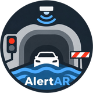
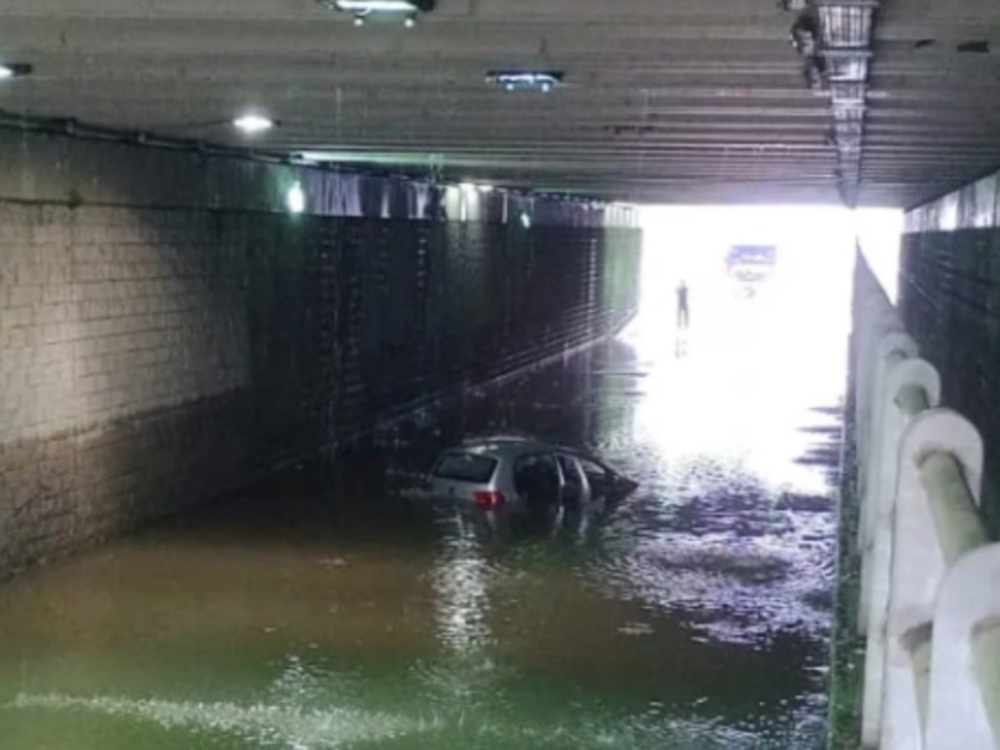
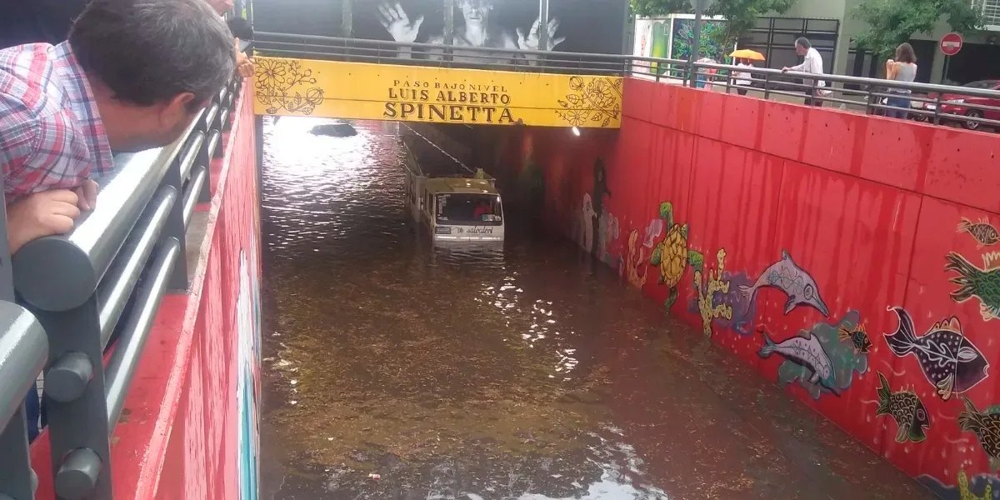
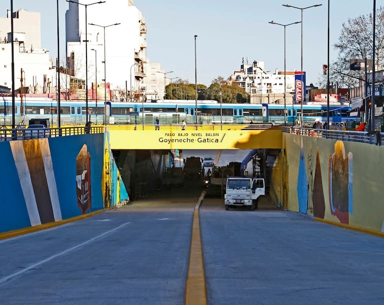
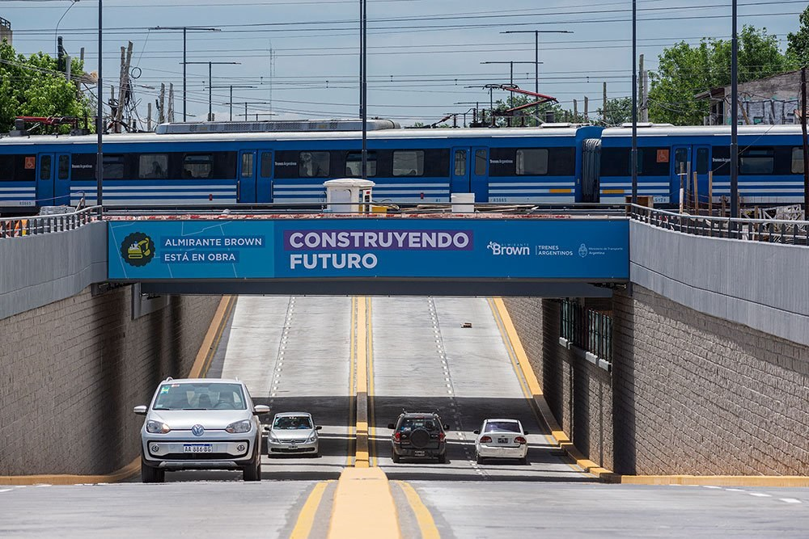

El problema

El problema
El problema

El problema
Contexto

Contexto

Contexto
Prevé eventos extremos con más:
El Servicio Meteorológico Nacional pronostica más lluvia de lo normal en:
Cómo se resuelve hoy
Cómo se resuelve hoy
La Ciudad recorre las calles cuando el Servicio Meteorológico Nacional da alerta amarilla o roja.
Sistema del Servicio Meteorológico Nacional para anticipar inundaciones en el AMBA.
La solución
La solución
Cómo funciona por dentro
Cómo funciona por dentro
Datos y comunicación
{ "version": 1, "dispositivo_id": "esp32-01", "paso_id": "tunel-01", "evento_id": "esp32-01-<instalacion>-<secuencia>", "arranque_id": "a1b2…", "secuencia": 4294967296001, "uptime_ms": 120000, "medido_en": "2026-11-13T18:09:41Z", "codigo": "ERR-001", "diagnostico": "Agua critica confirmada", "obstruccion_carril1_cm": 70, "obstruccion_carril2_cm": 70, "sensor1_valido": true, "sensor2_valido": true, "agua_activa": true, "agua_pendiente": false}
Tecnología
Negocio
Negocio
Negocio
Negocio
Cómo se arma un equipo AlertAR
El cerebro del sistema
Impermeables, uno por carril
Flotante de acero inoxidable
Funciona aunque se corte la luz
| Gabinete IP65 | $65.000 |
| Fuente cargadora | $45.000 |
| Batería 12 V 7 Ah | $30.000 |
Antes de la bajada
| Semáforo LED | $400.000 |
| Cartel LED | $9.000.000 |
| Hidrogrúa | $1.200.000 |
| Mano de obra | $1.280.000 |
| Instalación eléctrica | $700.000 |
| Energía por día | 8,8 kWh |
| Energía por mes | $110.000 |
El sensor detecta agua
Agua confirmada
Un camión quieto más de 60 s
Nadie puede pasar